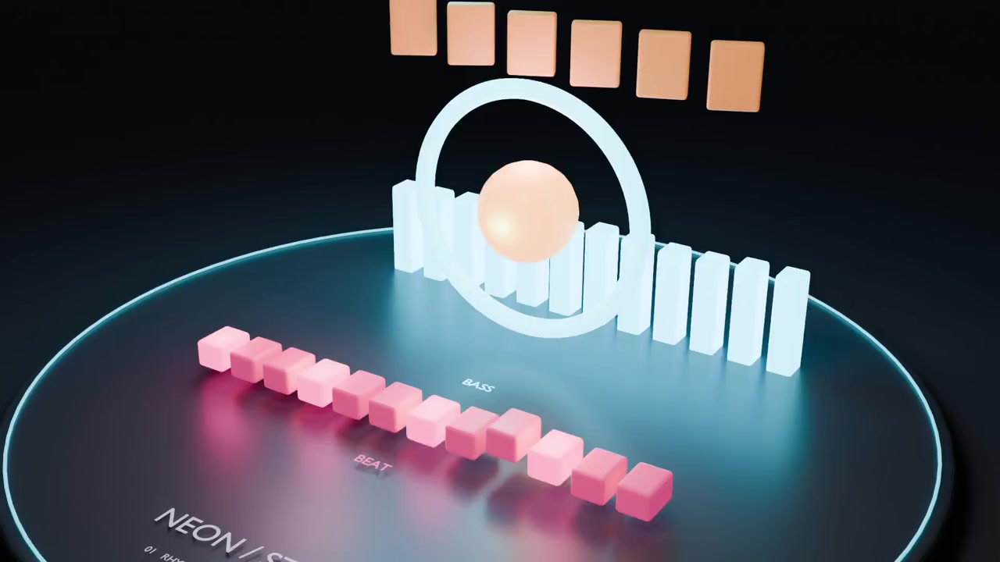
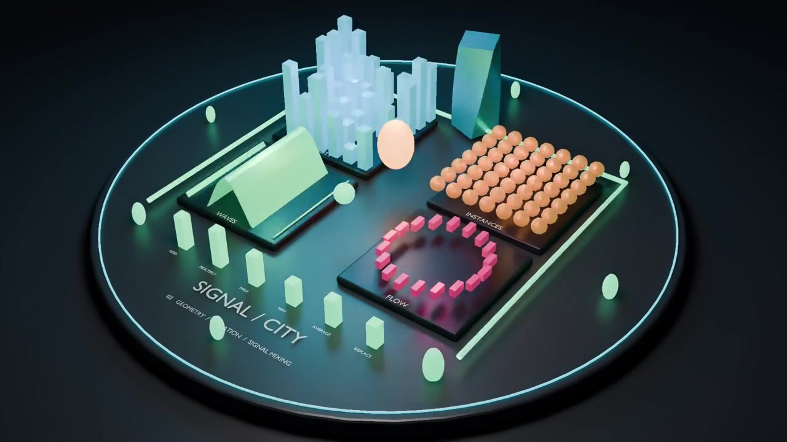
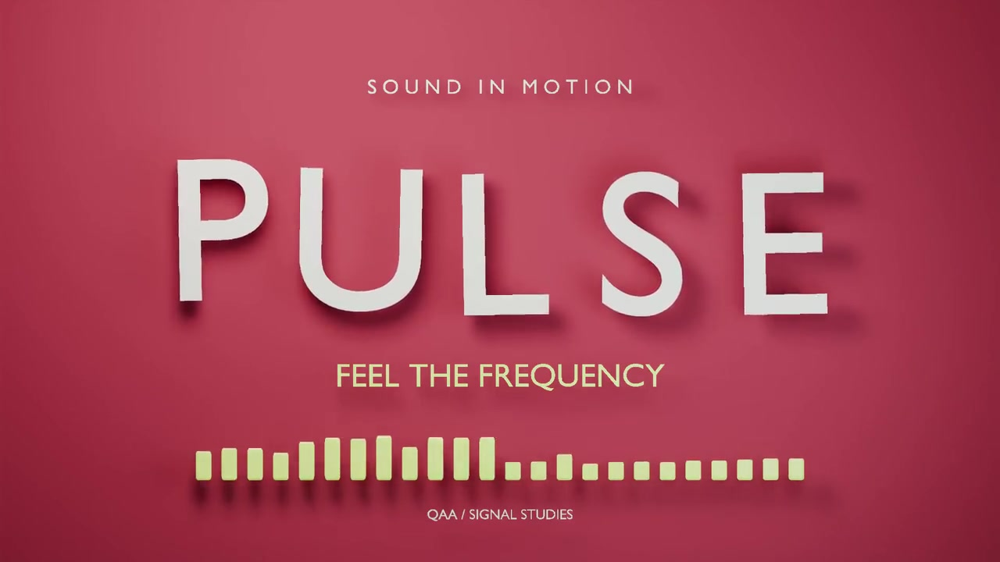
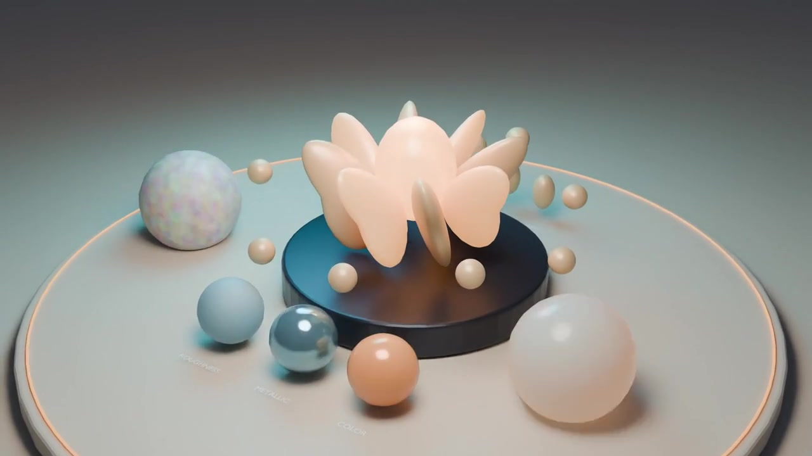
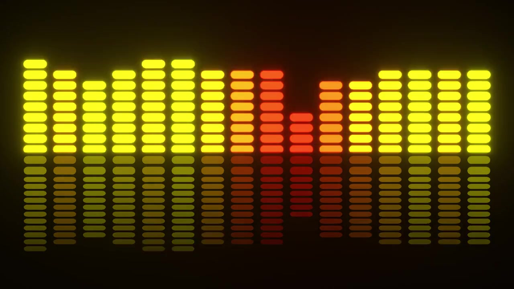
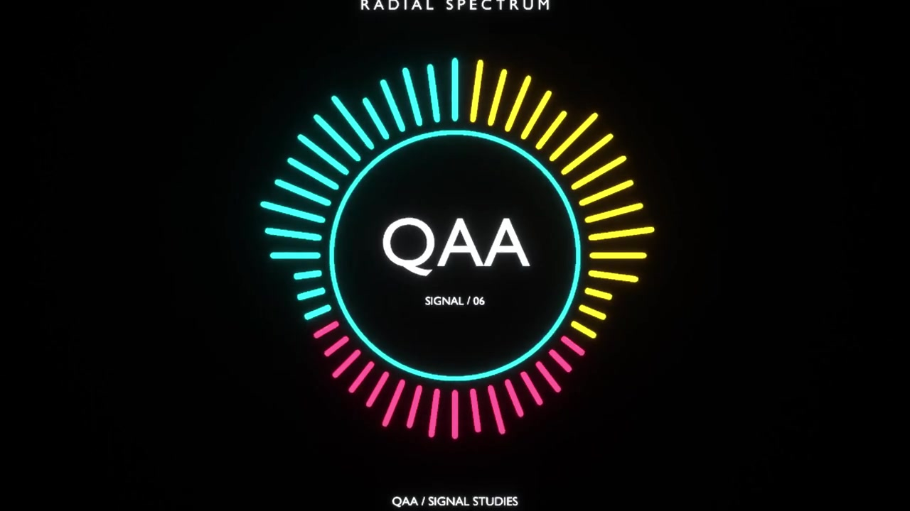

Pick the signal
Bass, Beat, Mids, Treble, Full Spectrum, Overall Energy or any custom frequency range.
Quick Audio Animator
Animate objects, lights, materials, cameras, Geometry Nodes and more from bass, beats, treble or custom frequency ranges.
01 / Why it feels fast
Load a track, pick a signal, choose what it drives, preview the result, then bake it to standard Blender animation.
Bass, Beat, Mids, Treble, Full Spectrum, Overall Energy or any custom frequency range.
Transforms, lights, materials, camera settings, Geometry Nodes, modifiers, shape keys and custom properties.
Attack, release, smoothing, curves, mapping, offsets, variation and layered combine modes.
Convert the final result to editable Blender Actions and keyframes for rendering and further work.
02 / Workflow
Start with a preset in seconds. Fine-tune only when you need more control.


03 / Creative control
Design how the audio behaves before it reaches the target.

04 / Target system
Quick Audio Animator is built for scene-wide audio-reactive workflows, not only object transforms.


05 / Presets
Use ready-made reactions for motion, lighting, cameras, materials and Geometry Nodes, then customize them for your scene.
Custom user presets can also be saved, renamed, deleted, imported and exported as JSON.
06 / Included content
Ready-to-open Blender 5.2 scenes for learning, reverse-engineering and fast experimentation.
Quick Audio Animator includes 6 ready-to-use demo scenes for Blender 5.2. Each scene demonstrates a different audio-reactive workflow and can be used as a learning example for your own setups.
Open a scene, inspect the reactions, replace the demo audio with your own track and keep building from there.

07 / Video gallery
Videos autoplay muted. Select a scene and use the large sound button when you want to hear the demo track.
08 / Production output
Keep iteration fast with Live Preview, then convert the result to standard Blender animation.
09 / Technical
Blender-native audio analysis. No cloud processing and no extra Python packages required.
10 / FAQ
No. Beat / Pulse detects audio transients rather than estimating musical BPM.
Yes. Use Live Preview while designing the effect, then bake the finished animation to keyframes.
Yes. Lights, cameras, materials, shader sockets, Geometry Nodes, modifiers, shape keys and custom properties are supported.
Yes. Per-object timing, strength, frequency and phase variation can make one setup feel much less uniform.
Yes. Six editable Blender 5.2 demo scenes are included with the add-on.